El círculo trigonométrico y sus identidades
Capítulo 6 · Parte II. Funciones y trigonometría
La medida de ángulos en radianes conduce a las funciones seno, coseno y tangente. La geometría del círculo unitario explica sus signos, dominios e identidades fundamentales.
Grabaciones de referencia: grabación de la cátedra 6.1, grabación de la cátedra 6.2.
Procedencia de este tramo: cátedra 6.1.
La medida de los ángulos
Medición sexagesimal y centesimal
En la cátedra (04:35–08:55). Dos rayos \(OA\) y \(OB\) con origen común determinan una apertura angular. El sistema sexagesimal divide la vuelta completa en \(360\) grados; el ángulo recto mide \(90^\circ\) y el llano, \(180^\circ\). Cada grado contiene \(60\) minutos de arco y cada minuto, \(60\) segundos de arco:
\[90^\circ=\text{ángulo recto},\qquad 1^\circ=60',\qquad 1'=60''.\]
En el sistema centesimal el ángulo recto mide \(100\) grados centesimales, denotados aquí por \(\mathrm{gon}\), y la vuelta completa mide \(400\,\mathrm{gon}\). Los submúltiplos se organizan en base cien. Su división facilita ciertos cálculos decimales, especialmente en topografía.
\[\boxed{90^\circ=100\,\mathrm{gon},\qquad 360^\circ=400\,\mathrm{gon}.}\]
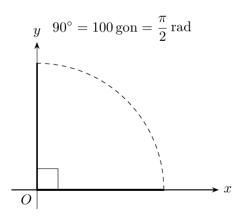
Figura 1. Tres representaciones de la medida de una misma apertura.
La razón arco-radio: medida circular
En la cátedra (08:55–16:50). Para un ángulo central dado, trazamos arcos de circunferencia de radios distintos \(r_1,r_2>0\). Sus longitudes \(s_1,s_2\) crecen en la misma proporción que los radios; por semejanza de sectores circulares,
\[\frac{s_1}{r_1}=\frac{s_2}{r_2}.\]
La razón común mide el ángulo en el sistema circular:
\[\boxed{\alpha=\frac{s}{r}\quad\text{(radianes)},\qquad s=r\alpha.}\]
En una misma unidad de longitud, \(s\) y \(r\) producen una razón sin dimensión física. El radián es el nombre de esa unidad angular y se escribe \(\mathrm{rad}\). Un ángulo de un radián subtiende un arco de longitud igual al radio. La independencia respecto de \(r\) explica que sea posible usar una circunferencia de radio \(1\).
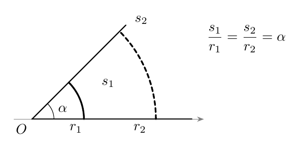
Figura 2. Para una apertura fija, el cociente \(s/r\) permanece constante.
Precisión editorial. En el SI, el radián posee un símbolo propio para identificar una medida angular, aunque su expresión en términos de unidades básicas es \(\mathrm{m}/\mathrm{m}=1\). La ausencia de dimensión explica la simplificación del cociente; la palabra «radián» conserva una función importante de identificación del tipo de magnitud.
Los ángulos fundamentales en radianes
En la cátedra (16:50–24:00). Una circunferencia de radio \(r\) tiene longitud \(2\pi r\). Una vuelta completa mide, por consiguiente,
\[\frac{2\pi r}{r}=2\pi\;\mathrm{rad}.\]
Un cuarto de vuelta mide \(\pi/2\) y media vuelta mide \(\pi\). La conversión universal es
\[\boxed{180^\circ=\pi\;\mathrm{rad},\qquad \alpha_{\mathrm{rad}}=\alpha_{^\circ}\frac{\pi}{180}.}\]
| Apertura | Grados | Radianes |
|---|---|---|
| Sexta parte de una vuelta | \(60^\circ\) | \(\pi/3\) |
| Duodécima parte | \(30^\circ\) | \(\pi/6\) |
| Octava parte | \(45^\circ\) | \(\pi/4\) |
| Cuarta parte | \(90^\circ\) | \(\pi/2\) |
| Media vuelta | \(180^\circ\) | \(\pi\) |
| Vuelta completa | \(360^\circ\) | \(2\pi\) |
Ángulos orientados y vueltas sucesivas
En la cátedra (24:00–30:15). Fijamos como lado inicial el rayo horizontal positivo. La rotación antihoraria asigna medidas positivas; la rotación horaria asigna medidas negativas. La medida angular orientada toma valores reales y registra vueltas sucesivas; por ejemplo, \(5\pi/2\) representa una vuelta completa más \(\pi/2\).
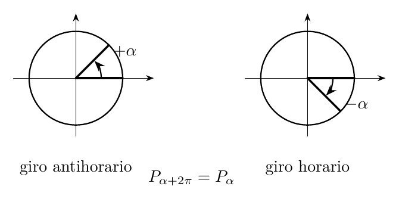
Figura 3. El signo registra el sentido del giro y las vueltas completas acumulan \(2\pi\) radianes.
El extremo final sobre la circunferencia coincide después de cada vuelta completa. Así, para cualquier \(k\in\mathbb Z\), las medidas \(\alpha\) y \(\alpha+2k\pi\) designan la misma posición final. Se distinguen por el número de vueltas acumuladas.
Ampliación editorial. Para medidas mayores que una vuelta o negativas, la interpretación \(s/r\) utiliza la longitud de arco orientada y acumulada de la trayectoria. Si se toma únicamente el arco geométrico más corto entre dos rayos, se pierde la información sobre las vueltas completas y el sentido.
La circunferencia trigonométrica y las funciones seno y coseno
La aplicación ángulo-punto
En la cátedra (30:15–36:55). Consideramos la circunferencia unitaria
\[\mathbb S^1=\{(x,y)\in\mathbb R^2:x^2+y^2=1\}.\]
El rayo inicial corta a \(\mathbb S^1\) en \(A=(1,0)\). Cada ángulo orientado \(\alpha\in\mathbb R\) determina un punto final único \(P_\alpha\in\mathbb S^1\). La aplicación \(\alpha\mapsto P_\alpha\) tiene dominio \(\mathbb R\) y repite la misma imagen tras una vuelta:
\[\boxed{P_{\alpha+2k\pi}=P_\alpha\quad(k\in\mathbb Z).}\]
La construcción posee una periodicidad de \(2\pi\). Los puntos finales corresponden a clases de ángulos que difieren en una cantidad entera de vueltas completas.
Definiciones afirmativas del seno y coseno
En la cátedra (36:55–42:45). Escribimos las coordenadas cartesianas del punto final como
\[\boxed{P_\alpha=(\cos\alpha,\operatorname{sen}\alpha).}\]
El coseno es la función que a cada medida angular \(\alpha\) asigna la abscisa del punto \(P_\alpha\). El seno asigna su ordenada. Ambas funciones tienen dominio \(\mathbb R\) e imagen \([-1,1]\).
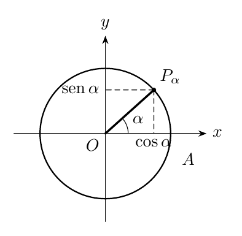
Figura 4. Proyecciones horizontal y vertical del radio unitario.
En las posiciones cardinales se obtiene inmediatamente:
| \(\alpha\) | \(0\) | \(\pi/2\) | \(\pi\) | \(3\pi/2\) | \(2\pi\) |
|---|---|---|---|---|---|
| \(\cos\alpha\) | \(1\) | \(0\) | \(-1\) | \(0\) | \(1\) |
| \(\operatorname{sen}\alpha\) | \(0\) | \(1\) | \(0\) | \(-1\) | \(0\) |
En la cátedra. A cada \(\alpha\) le corresponde un único \(P_\alpha\), aunque distintos ángulos pueden compartir el mismo punto. Por eso la aplicación ángulo-punto es periódica y presenta múltiples medidas asociadas a una misma posición.
Ampliación editorial: simetrías. La reflexión respecto del eje horizontal produce
\[\cos(-\alpha)=\cos\alpha,\qquad \operatorname{sen}(-\alpha)=-\operatorname{sen}\alpha.\]
La primera función es par y la segunda, impar. De la media vuelta se obtiene
\[\cos(\alpha+\pi)=-\cos\alpha,\qquad \operatorname{sen}(\alpha+\pi)=-\operatorname{sen}\alpha.\]
Las seis funciones trigonométricas y sus dominios
En la cátedra (42:45–55:50). Las cuatro funciones adicionales se construyen mediante cocientes de seno y coseno:
\[ \begin{aligned} \tan\alpha&=\frac{\operatorname{sen}\alpha}{\cos\alpha}, &\cot\alpha&=\frac{\cos\alpha}{\operatorname{sen}\alpha},\\ \sec\alpha&=\frac{1}{\cos\alpha}, &\csc\alpha&=\frac{1}{\operatorname{sen}\alpha}. \end{aligned} \]
Para determinar sus dominios, partimos del de seno y coseno, que es \(\mathbb R\), y seleccionamos los ángulos cuyo denominador tiene valor distinto de cero. Sobre el círculo unitario,
\[\cos\alpha=0\iff\alpha=\frac\pi2+k\pi,\qquad \operatorname{sen}\alpha=0\iff\alpha=k\pi,\qquad k\in\mathbb Z.\]
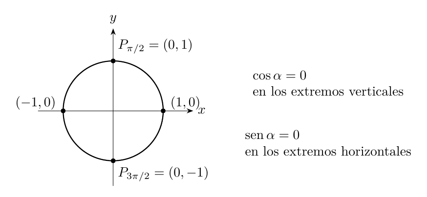
Figura 5. Ceros de coseno en los extremos del diámetro vertical; ceros de seno en los extremos del horizontal.
| Función | Expresión | Dominio natural |
|---|---|---|
| \(\operatorname{sen}\) | ordenada de \(P_\alpha\) | \(\mathbb R\) |
| \(\cos\) | abscisa de \(P_\alpha\) | \(\mathbb R\) |
| \(\tan\) | \(\operatorname{sen}/\cos\) | \(\mathbb R\setminus\{\pi/2+k\pi:k\in\mathbb Z\}\) |
| \(\sec\) | \(1/\cos\) | \(\mathbb R\setminus\{\pi/2+k\pi:k\in\mathbb Z\}\) |
| \(\cot\) | \(\cos/\operatorname{sen}\) | \(\mathbb R\setminus\{k\pi:k\in\mathbb Z\}\) |
| \(\csc\) | \(1/\operatorname{sen}\) | \(\mathbb R\setminus\{k\pi:k\in\mathbb Z\}\) |
La pareja tangente-secante comparte el mismo dominio; la pareja cotangente-cosecante comparte otro dominio. Seno y coseno están definidos para todos los ángulos reales.
Cotangente frente a recíproco de tangente
En la cátedra (50:30–52:10). Se presenta una distinción de funciones según su dominio. Las expresiones
\[\cot\alpha=\frac{\cos\alpha}{\operatorname{sen}\alpha} \quad\text{y}\quad \frac1{\tan\alpha}\]
coinciden en los ángulos donde ambas están definidas. Sin embargo, sus dominios naturales son diferentes:
\[\operatorname{Dom}(1/\tan)=\mathbb R\setminus\left(\{k\pi\}\cup\{\pi/2+k\pi\}\right) =\mathbb R\setminus\{k\pi/2:k\in\mathbb Z\}.\]
Por ejemplo, \(\cot(\pi/2)=0\) está definido porque \(\operatorname{sen}(\pi/2)=1\), mientras \(1/\tan(\pi/2)\) requiere evaluar una tangente cuyo denominador se anula. La ley simplificada y el dominio se consideran conjuntamente al identificar funciones.
Las identidades fundamentales
La identidad pitagórica
En la cátedra (55:50–57:42). El punto \(P_\alpha\) satisface la ecuación de la circunferencia unitaria, \(x^2+y^2=1\). Al sustituir sus coordenadas, para cada \(\alpha\in\mathbb R\),
\[\boxed{\cos^2\alpha+\operatorname{sen}^2\alpha=1.}\]
La identidad expresa el teorema de Pitágoras en el radio unitario y comprende los cuatro cuadrantes.
Identidad tangente-secante
En la cátedra (57:42–59:39). Para cada \(\alpha\) del dominio de \(\tan\), es decir, con \(\cos\alpha\ne0\), dividimos la identidad anterior por \(\cos^2\alpha\):
\[ \frac{\cos^2\alpha}{\cos^2\alpha}+\frac{\operatorname{sen}^2\alpha}{\cos^2\alpha} =\frac1{\cos^2\alpha}. \]
Se obtiene
\[\boxed{1+\tan^2\alpha=\sec^2\alpha\quad(\cos\alpha\ne0).}\]
Identidad cotangente-cosecante
En la cátedra (59:39–1:01:10). Para cada \(\alpha\) con \(\operatorname{sen}\alpha\ne0\), dividimos por \(\operatorname{sen}^2\alpha\):
\[\boxed{1+\cot^2\alpha=\csc^2\alpha\quad(\operatorname{sen}\alpha\ne0).}\]
Las tres identidades proceden de una sola igualdad geométrica. Las hipótesis de los cocientes indican exactamente los dominios donde cada transformación es válida.
Cálculo geométrico de los ángulos especiales
El ángulo \(45^\circ=\pi/4\)
En la cátedra (1:06:42–1:09:38). El rayo que forma \(\pi/4\) con el eje horizontal sigue la bisectriz \(y=x\) del primer cuadrante. Su intersección con la circunferencia \(x^2+y^2=1\) satisface
\[x^2+x^2=1\iff 2x^2=1.\]
Como el punto está en el primer cuadrante, \(x=1/\sqrt2=\sqrt2/2\); también \(y=x\). Por tanto,
\[\boxed{\cos(\pi/4)=\operatorname{sen}(\pi/4)=\frac{\sqrt2}{2}.}\]
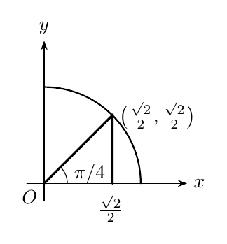
Figura 6. El triángulo rectángulo isósceles asociado a \(\pi/4\).
El ángulo \(60^\circ=\pi/3\)
En la cátedra (1:11:40–1:17:22). Tomamos un triángulo equilátero de lado \(1\) con un vértice en el origen y otro en \((1,0)\). Su tercer vértice \(P\) pertenece a la circunferencia unitaria y forma un ángulo de \(60^\circ\). La altura divide la base en dos partes de longitud \(1/2\); por ello \(x=1/2\). La ecuación de la circunferencia da
\[y^2=1-\frac14=\frac34,\qquad y=\frac{\sqrt3}{2}.\]
Luego
\[\boxed{\cos(\pi/3)=\frac12,\qquad\operatorname{sen}(\pi/3)=\frac{\sqrt3}{2}.}\]
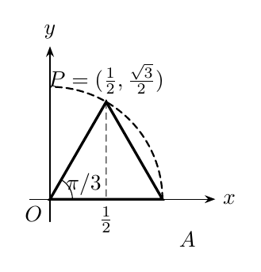
Figura 7. El triángulo equilátero produce dos triángulos rectángulos de \(30^\circ\), \(60^\circ\) y \(90^\circ\).
El ángulo \(30^\circ=\pi/6\)
En la cátedra (1:17:22–1:19:12). Los ángulos \(\pi/6\) y \(\pi/3\) son complementarios; al intercambiar las coordenadas horizontal y vertical del triángulo anterior se obtiene
\[\boxed{\cos(\pi/6)=\frac{\sqrt3}{2},\qquad\operatorname{sen}(\pi/6)=\frac12.}\]
La tabla completa de los ángulos fundamentales del primer cuadrante es:
| \(\alpha\) | \(0\) | \(\pi/6\) | \(\pi/4\) | \(\pi/3\) | \(\pi/2\) |
|---|---|---|---|---|---|
| Grados | \(0^\circ\) | \(30^\circ\) | \(45^\circ\) | \(60^\circ\) | \(90^\circ\) |
| \(\operatorname{sen}\alpha\) | \(0\) | \(1/2\) | \(\sqrt2/2\) | \(\sqrt3/2\) | \(1\) |
| \(\cos\alpha\) | \(1\) | \(\sqrt3/2\) | \(\sqrt2/2\) | \(1/2\) | \(0\) |
| \(\tan\alpha\) | \(0\) | \(1/\sqrt3\) | \(1\) | \(\sqrt3\) | indefinida |
La regla mnemotécnica que muestra el profesor es escribir los valores del seno como \(\sqrt n/2\), con \(n=0,1,2,3,4\), en orden de ángulos crecientes, y los del coseno en orden inverso. Su validez está sustentada por los cálculos geométricos anteriores, además de servir como recordatorio.
Segmentos trigonométricos y la recta tangente al círculo
En la cátedra (1:21:45–1:28:55). Para \(\cos\alpha\ne0\), la recta por el origen y \(P_\alpha\) tiene pendiente
\[m=\frac{\operatorname{sen}\alpha}{\cos\alpha}=\tan\alpha,\]
y su ecuación es \(y=(\tan\alpha)x\). Al intersectarla con la recta vertical \(x=1\), obtenemos el punto
\[Q_\alpha=(1,\tan\alpha).\]
Por tanto, la tangente puede leerse geométricamente como la ordenada de \(Q_\alpha\), medida a partir del eje horizontal. La recta \(x=1\) es tangente a la circunferencia unitaria en \((1,0)\); en ella la ordenada conserva el signo de \(\tan\alpha\). Cuando \(\cos\alpha=0\), la recta radial es vertical y esta construcción carece de un punto de intersección finito con \(x=1\).
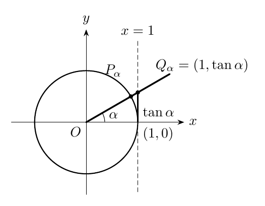
Figura 8. Una representación geométrica de la tangente por intersección de dos rectas.
Ampliación editorial. Para un punto \(Q_\alpha\) como el de la figura, la distancia desde el origen es \(\sqrt{1+\tan^2\alpha}=|\sec\alpha|\). El valor absoluto refleja que la longitud siempre es no negativa; el signo de \(\sec\alpha\) coincide con el del coseno.
Los gráficos de seno, coseno y tangente
Seno y coseno: periodicidad, signos y crecimiento
En la cátedra (1:28:55–1:34:10). A medida que el ángulo recorre una vuelta positiva, la coordenada vertical del círculo crece desde \(0\) hasta \(1\), decrece hasta \(0\) y luego hasta \(-1\), y vuelve a crecer hasta \(0\). Así surge el perfil de la función seno. La coordenada horizontal comienza en \(1\), decrece hasta \(-1\) y vuelve a crecer hasta \(1\), originando el coseno.
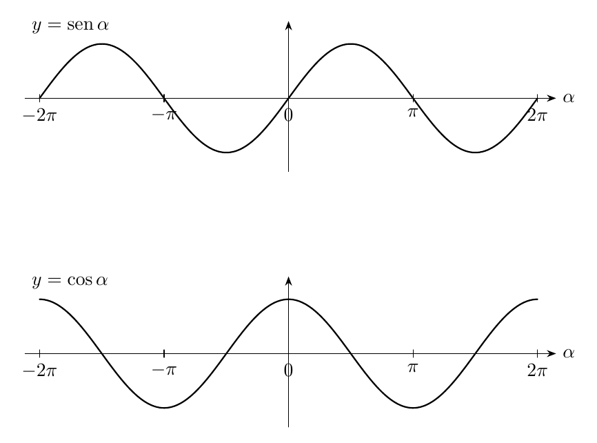
Figura 9. Los dos gráficos tienen imagen \([-1,1]\) y periodo \(2\pi\).
En la primera vuelta, el seno crece en \([0,\pi/2]\) y \([3\pi/2,2\pi]\), y decrece en \([\pi/2,3\pi/2]\); el coseno decrece en \([0,\pi]\) y crece en \([\pi,2\pi]\). La periodicidad permite trasladar estos comportamientos por múltiplos de \(2\pi\). Estos tramos se deducen geométricamente del movimiento de las proyecciones, sin usar derivadas.
\[\boxed{\operatorname{sen}(\alpha+2\pi)=\operatorname{sen}\alpha,\qquad \cos(\alpha+2\pi)=\cos\alpha.}\]
Tangente: tramos, ceros y asíntotas
En la cátedra (1:34:10–1:37:25). Las ordenadas de \(Q_\alpha=(1,\tan\alpha)\) crecen a lo largo de cada intervalo delimitado por dos ángulos consecutivos donde el coseno se anula. Al acercarse al extremo derecho \(\pi/2\) de \((-\pi/2,\pi/2)\), la ordenada aumenta sin cota; al aproximarse desde la derecha, toma valores negativos de magnitud creciente. La misma configuración se repite en los demás intervalos.
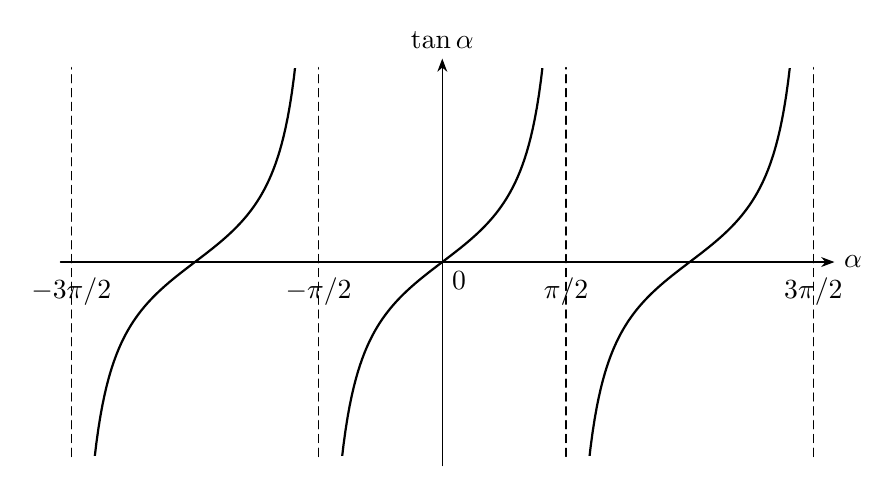
Figura 10. La tangente es estrictamente creciente en cada componente de su dominio y tiene asíntotas verticales en \(\pi/2+k\pi\).
La tangente tiene periodo fundamental \(\pi\), pues una media vuelta cambia simultáneamente los signos del seno y del coseno, conservando su cociente:
\[\boxed{\tan(\alpha+\pi)=\tan\alpha\qquad(\alpha\in\operatorname{Dom}\tan).}\]
Ampliación editorial. Esta comprobación distingue el periodo de la tangente (\(\pi\)) del periodo común de seno y coseno (\(2\pi\)). Para cada \(k\in\mathbb Z\), las rectas \(\alpha=\pi/2+k\pi\) son asíntotas verticales. Los ceros de tangente son los múltiplos enteros de \(\pi\).
Cuestiones finales y precisiones conceptuales
En la cátedra (1:37:25–1:51:09). Durante las preguntas el profesor vuelve sobre la acotación, las restricciones de dominio y la interpretación del grafo. Una función puede tener un dominio acotado y una imagen sin cota: la tangente, restringida a \((-\pi/2,\pi/2)\), tiene dominio acotado e imagen \(\mathbb R\). Restringir una función significa elegir una parte de su dominio y considerar la misma asignación en esa parte; su imagen puede cambiar según la restricción elegida.
La clase distingue también las expresiones con parte entera cuya lectura verbal puede resultar ambigua según la ubicación de los paréntesis. La condición de dominio procede del denominador efectivamente escrito: para \(1/\lfloor x\rfloor\) se excluyen los \(x\) tales que \(\lfloor x\rfloor=0\), esto es, \([0,1)\); para \(1/(\lfloor x\rfloor-x)\) se excluyen los enteros. Estas dos expresiones pertenecen al diálogo final y se presentan como aclaración sobre la sintaxis matemática.
Verificación y reconstrucción editorial
La prueba de que una función está acotada superiormente consiste en encontrar \(M\in\mathbb R\) tal que \(f(x)\le M\) para todos los puntos de su dominio; está acotada inferiormente cuando existe \(m\) con \(m\le f(x)\) para todos esos puntos. Por ejemplo, \(-1\le\operatorname{sen}\alpha\le1\). La restricción de una función acotada sigue acotada por las mismas constantes.
Para obtener los gráficos se distinguen tres niveles: la geometría del círculo proporciona los valores principales y la simetría; la periodicidad reproduce la información a lo largo de toda \(\mathbb R\); el estudio de crecimiento organiza los arcos entre valores cardinales. Los argumentos de la clase son geométricos y preparan la formalización posterior mediante límites y derivadas.
Procedencia de este tramo: cátedra 6.2.
De la trigonometría general a los triángulos rectángulos
En la cátedra (11:47–17:12). En el círculo unitario cada ángulo orientado \(\alpha\in\mathbb R\) determina el punto
\[P_\alpha=(\cos\alpha,\operatorname{sen}\alpha).\]
El signo de las coordenadas, y con ellas el de las funciones trigonométricas, depende del cuadrante. La tangente se obtiene como \(\tan\alpha=\operatorname{sen}\alpha/\cos\alpha\) en los ángulos donde \(\cos\alpha\ne0\).
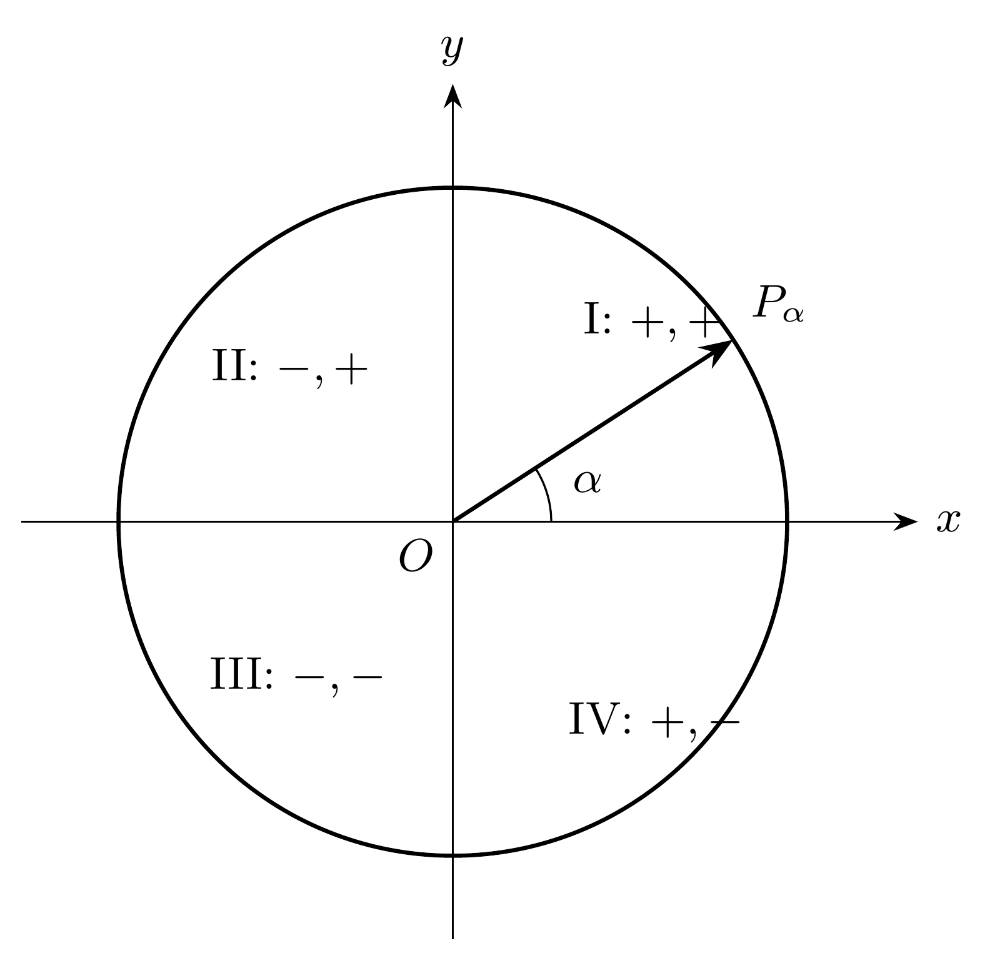
| Cuadrante | \(\cos\alpha\) | \(\operatorname{sen}\alpha\) | \(\tan\alpha\) |
|---|---|---|---|
| I | \(+\) | \(+\) | \(+\) |
| II | \(-\) | \(+\) | \(-\) |
| III | \(-\) | \(-\) | \(+\) |
| IV | \(+\) | \(-\) | \(-\) |
El profesor recuerda una mnemotecnia para los signos positivos: todos, seno, tangente, coseno (I–IV). Esta regla resume una propiedad que se obtiene directamente de las coordenadas en el plano.
En un triángulo rectángulo no degenerado, los dos ángulos agudos \(\alpha,\beta\) satisfacen
\[\alpha>0,\quad \beta>0,\qquad\alpha+\beta=\frac\pi2.\]
En particular, cada uno pertenece a \((0,\pi/2)\). Aquí se sitúa la trigonometría de triángulos rectángulos como aplicación de la trigonometría general definida para ángulos reales.
Las tres razones trigonométricas mediante semejanza
En la cátedra (17:12–25:49). Sea \(ABC\) un triángulo rectángulo en \(C\), con \(\angle A=\alpha\). Se fija un sistema de coordenadas con origen en \(A\) y eje horizontal a lo largo de \(AC\). El rayo \(AB\) intercepta una circunferencia centrada en \(A\) y de radio auxiliar \(r>0\) en \(P=(r\cos\alpha,r\operatorname{sen}\alpha)\). Su proyección vertical al eje horizontal es \(H\). El caso \(r=1\) recupera exactamente la construcción unitaria empleada por el profesor; la figura utiliza un radio ampliado para distinguir los dos triángulos.
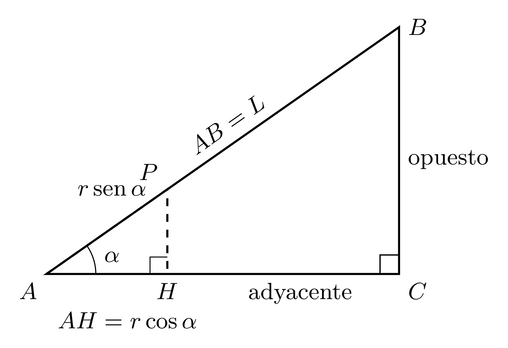
Los triángulos \(ABC\) y \(AHP\) tienen un ángulo \(\alpha\) común y sendos ángulos rectos. El criterio ángulo–ángulo establece su semejanza. Los lados correspondientes son
\[AC\leftrightarrow AH=r\cos\alpha,\quad BC\leftrightarrow HP=r\operatorname{sen}\alpha,\quad AB\leftrightarrow AP=r.\]
Desarrollo de la demostración. La proporcionalidad de lados permite escribir
\[\frac{r\cos\alpha}{AC}=\frac{r\operatorname{sen}\alpha}{BC}=\frac r{AB}.\]
Puesto que \(r>0\), al simplificar ese factor se obtiene \(\cos\alpha/AC=\operatorname{sen}\alpha/BC=1/AB\).
Multiplicando por los lados respectivos se obtienen las fórmulas tradicionales
\[ \boxed{\operatorname{sen}\alpha=\frac{BC}{AB}=\frac{\text{cateto opuesto}}{\text{hipotenusa}},}\qquad \boxed{\cos\alpha=\frac{AC}{AB}=\frac{\text{cateto adyacente}}{\text{hipotenusa}}.} \]
Al dividir las dos igualdades, las hipotenusas se simplifican y resulta
\[\boxed{\tan\alpha=\frac{BC}{AC}=\frac{\text{cateto opuesto}}{\text{cateto adyacente}}.}\]
Estas expresiones se refieren siempre al ángulo seleccionado. Si se trabaja con el otro ángulo agudo del triángulo, los papeles de los catetos opuesto y adyacente se intercambian.
Proyecciones ortogonales y componentes
En la cátedra (26:04–32:19). Las igualdades anteriores se utilizan habitualmente despejando el cateto correspondiente. Si un segmento de longitud \(L\) forma un ángulo agudo \(\alpha\) con la horizontal, entonces sus componentes son
\[\boxed{L_x=L\cos\alpha,\qquad L_y=L\operatorname{sen}\alpha.}\]
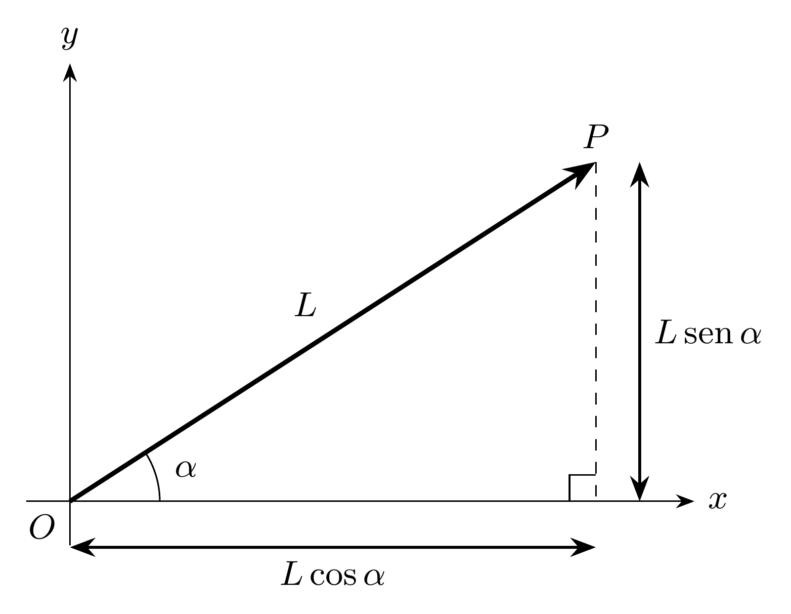
El cateto adyacente mide \(L\cos\alpha\) y el opuesto mide \(L\operatorname{sen}\alpha\). Esta lectura aporta una herramienta para interpretar desplazamientos, fuerzas y velocidades en direcciones perpendiculares. En una descripción vectorial más amplia, los signos de las componentes quedan determinados por el ángulo orientado.
Ampliación editorial. Para un vector plano de módulo \(L\) y ángulo orientado \(\alpha\), sus componentes cartesianas se expresan por
\[\vec v=L(\cos\alpha,\operatorname{sen}\alpha).\]
Esta fórmula extiende el dibujo del primer cuadrante a todas las orientaciones y respeta los signos incorporados en seno y coseno.
Aplicación I: pendiente de una recta
En la cátedra (32:23–35:23). Sea una recta de pendiente \(m\) que pasa por dos puntos distintos \(A=(x_1,y_1)\) y \(B=(x_2,y_2)\), con \(x_1\ne x_2\). La diferencia vertical \(y_2-y_1\) y la horizontal \(x_2-x_1\) constituyen los catetos de un triángulo rectángulo cuya hipotenusa pertenece a la recta. Para la configuración ascendente del dibujo,
\[\tan\alpha=\frac{y_2-y_1}{x_2-x_1}.\]
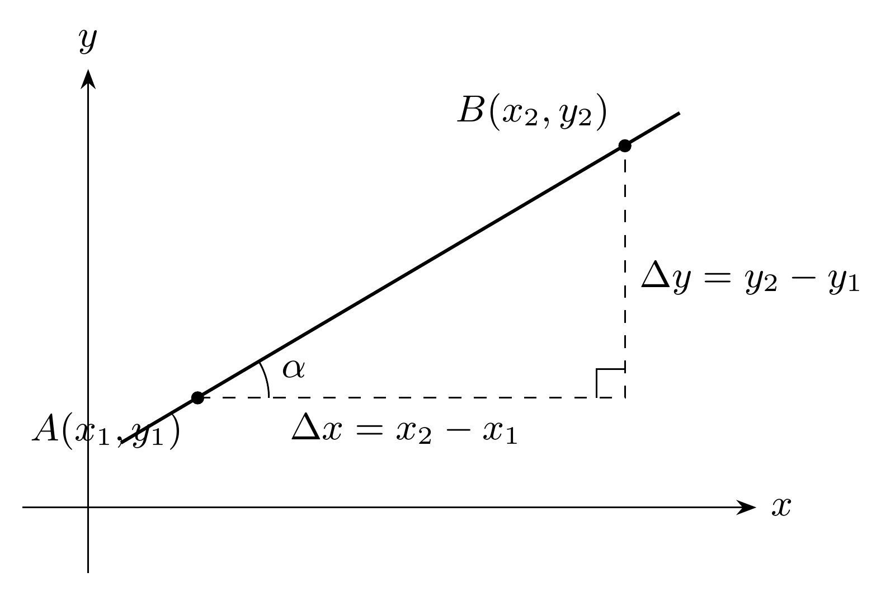
La razón del lado derecho es la pendiente de la geometría analítica. En consecuencia,
\[\boxed{m=\tan\alpha.}\]
El profesor enfatiza que la fórmula también describe pendientes negativas usando un ángulo orientado coherente. Precisión editorial: en el caso de una recta no vertical, es posible tomar el representante de su inclinación en \((-\pi/2,\pi/2)\); entonces \(m\) y \(\tan\alpha\) poseen el mismo signo. Una recta vertical corresponde a una dirección en la que el cociente que define la pendiente carece de denominador distinto de cero.
Aplicación II: fuerzas sobre un plano inclinado
En la cátedra (35:33–51:25). San Martín considera una partícula de masa \(m\) sobre un plano que forma un ángulo agudo \(\alpha\) con la horizontal. El peso tiene módulo \(mg\) y apunta verticalmente hacia abajo. Elige dos direcciones ortogonales: una paralela al plano y otra perpendicular a él.
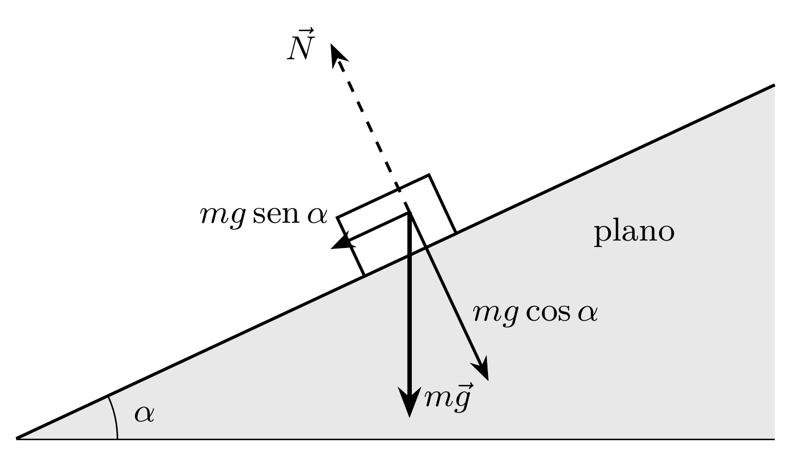
La geometría de los ángulos del triángulo de fuerzas conduce a
\[\boxed{P_{\parallel}=mg\operatorname{sen}\alpha,\qquad P_{\perp}=mg\cos\alpha.}\]
\(P_{\parallel}\) es la magnitud de la componente dirigida cuesta abajo, y \(P_{\perp}\) la de la componente dirigida hacia el plano.
Reacción normal y sujeción mediante cuerda
En una superficie rígida, sin otras fuerzas perpendiculares, el equilibrio en la dirección normal exige una reacción de magnitud
\[N=mg\cos\alpha.\]
Si una cuerda paralela al plano sostiene el cuerpo en reposo y se omite el roce, la tensión requerida es
\[T=mg\operatorname{sen}\alpha.\]
Las dos expresiones corresponden a balances de fuerzas en direcciones diferentes. La normal compensa la componente perpendicular; la cuerda compensa la componente paralela.
Resorte y deformación elástica
El profesor reemplaza después la cuerda por un resorte y utiliza la proporcionalidad entre tensión y elongación. Si \(k>0\) es la constante elástica y \(\Delta\ell\) es el estiramiento respecto de la longitud natural,
\[k\,\Delta\ell=T=mg\operatorname{sen}\alpha \quad\Longrightarrow\quad \boxed{\Delta\ell=\frac{mg\operatorname{sen}\alpha}{k}.}\]
Esta relación describe un equilibrio idealizado de un resorte alineado con el plano. El profesor menciona también el hundimiento en soportes deformables como una aplicación conceptual del mismo balance de fuerzas.
Roce estático y ángulo crítico
Se considera ahora el equilibrio proporcionado por la fuerza de roce estático. Su magnitud puede ajustarse hasta el máximo \(\mu_sN\), donde \(\mu_s\ge0\) es el coeficiente de roce estático. La condición para que el cuerpo permanezca en reposo, en el modelo sin otras fuerzas paralelas, es
\[mg\operatorname{sen}\alpha\le\mu_s mg\cos\alpha.\]
Como \(m,g,\cos\alpha\) son positivos para \(0<\alpha<\pi/2\), al dividir se conserva el sentido de la desigualdad:
\[\boxed{\tan\alpha\le\mu_s.}\]
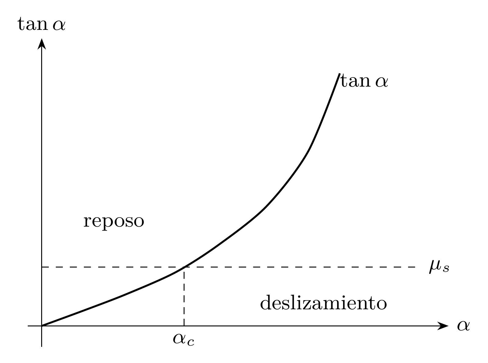
Para el umbral de inicio del deslizamiento, la igualdad determina el ángulo crítico \(\alpha_c\) mediante \(\tan\alpha_c=\mu_s\). La creciente inclinación eleva la componente paralela del peso respecto de la capacidad máxima del roce.
Precisión editorial. La ley del roce estático afirma \(|F_r|\le\mu_sN\); la igualdad se alcanza en el umbral de deslizamiento. En posiciones de reposo con inclinaciones menores, la magnitud real del roce es \(mg\operatorname{sen}\alpha\), determinada por el equilibrio. El análisis presupone un contacto estable y un modelo mecánico ideal.
Preparación de las identidades: dos puntos del círculo unitario
En la cátedra (51:53–1:04:47). Sean \(\alpha,\beta\in\mathbb R\) dos ángulos orientados y
\[P_\alpha=(\cos\alpha,\operatorname{sen}\alpha),\qquad P_\beta=(\cos\beta,\operatorname{sen}\beta).\]
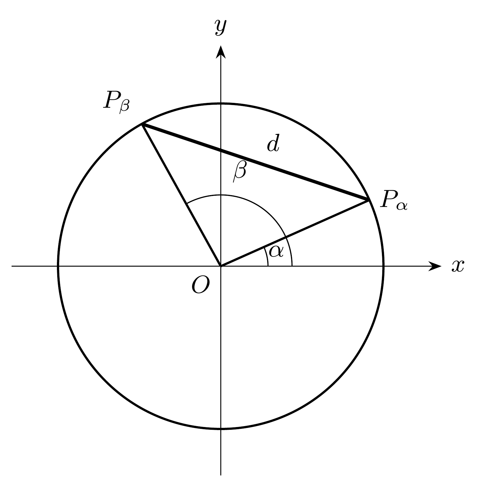
Las funciones seno y coseno ya incorporan los signos correspondientes a los cuadrantes. El profesor advierte repetidamente que colocar un signo menos adicional delante de una coordenada por estar en un cuadrante determinado cambia el valor calculado y puede invalidar el dibujo. Por ejemplo, si \(\cos\alpha<0\), la abscisa es exactamente \(\cos\alpha\), un número negativo.
La distancia \(d=|P_\alpha P_\beta|\) se calcula por la fórmula de geometría analítica:
\[d^2=(\cos\alpha-\cos\beta)^2+(\operatorname{sen}\alpha-\operatorname{sen}\beta)^2.\]
Desarrollo de la demostración. Expandiendo ambos cuadrados,
\[ \begin{aligned} d^2={}&\cos^2\alpha+\cos^2\beta-2\cos\alpha\cos\beta\\ &+\operatorname{sen}^2\alpha+\operatorname{sen}^2\beta -2\operatorname{sen}\alpha\operatorname{sen}\beta. \end{aligned} \]
Agrupando los términos de un mismo ángulo y aplicando \(\cos^2t+\operatorname{sen}^2t=1\) para \(t=\alpha,\beta\), queda
\[\boxed{d^2=2-2\big(\cos\alpha\cos\beta+ \operatorname{sen}\alpha\operatorname{sen}\beta\big).}\tag{1}\]
Esta expresión se obtuvo para cualquier par de ángulos reales. Tiene además una verificación geométrica: los dos puntos se encuentran en una circunferencia de diámetro \(2\), por lo que su distancia está entre \(0\) y \(2\) y su cuadrado entre \(0\) y \(4\).
El argumento decisivo: rotar simultáneamente los puntos
En la cátedra (1:10:28–1:19:35). El profesor mueve \(P_\alpha\) y \(P_\beta\) simultáneamente alrededor del origen, conservando la distancia entre ellos. Escoge una rotación de ángulo \(-\alpha\) para llevar el primero al punto \(P_0=(1,0)\). El segundo queda en \(P_{\beta-\alpha}\).
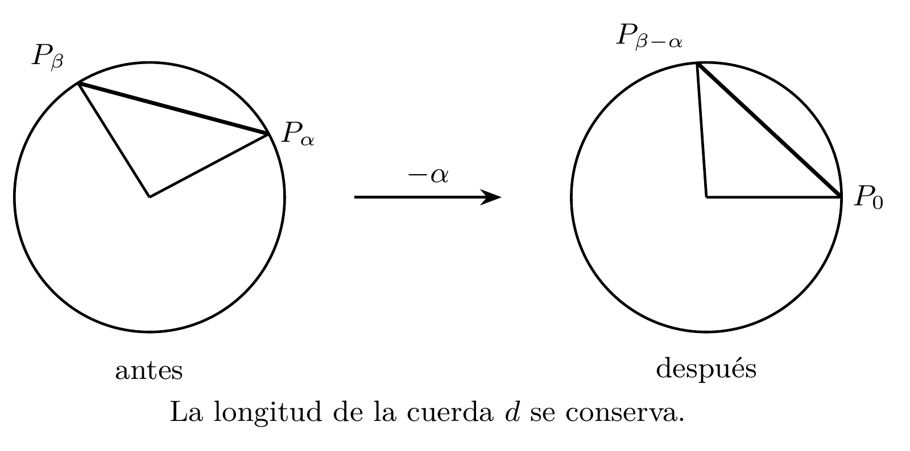
La rotación rígida preserva distancias, de modo que
\[|P_\alpha P_\beta|=|P_0P_{\beta-\alpha}|.\]
En la fórmula (1) se sustituyen \(\alpha\mapsto0\) y \(\beta\mapsto\beta-\alpha\). Como \(\cos0=1\) y \(\operatorname{sen}0=0\),
\[\boxed{d^2=2-2\cos(\beta-\alpha).}\tag{2}\]
Al igualar (1) y (2), restar \(2\) de ambos miembros y dividir por \(-2\) resulta la fórmula del coseno de una diferencia:
\[\boxed{\cos(\beta-\alpha)=\cos\beta\cos\alpha+ \operatorname{sen}\beta\operatorname{sen}\alpha,\qquad \alpha,\beta\in\mathbb R.}\tag{3}\]
Esta demostración es el núcleo matemático de la segunda mitad de la grabación. El profesor la obtiene a partir de una propiedad geométrica —la conservación de la cuerda bajo una rotación común— traducida a dos expresiones algebraicas de la misma distancia.
Consecuencias de la identidad de diferencia
Primera elección: \(\beta=0\). Paridad del coseno
En la cátedra (1:24:42–1:26:03). Al sustituir \(\beta=0\) en (3) se obtiene
\[\cos(-\alpha)=\cos0\cos\alpha+ \operatorname{sen}0\operatorname{sen}\alpha=\cos\alpha.\]
Por tanto,
\[\boxed{\cos(-\alpha)=\cos\alpha,\qquad\alpha\in\mathbb R.}\]
La función coseno es par: su gráfico posee simetría respecto del eje vertical.
Segunda elección: \(\beta=\pi/2\). Ángulos complementarios
En la cátedra (1:26:05–1:35:15). La misma fórmula, ahora con \(\beta=\pi/2\), da
\[ \begin{aligned} \cos\left(\frac\pi2-\alpha\right) &=\cos\frac\pi2\cos\alpha+ \operatorname{sen}\frac\pi2\operatorname{sen}\alpha\\ &=0\cdot\cos\alpha+1\cdot\operatorname{sen}\alpha =\operatorname{sen}\alpha. \end{aligned} \]
Así se demuestra
\[\boxed{\operatorname{sen}\alpha=\cos\left(\frac\pi2-\alpha\right).}\tag{4}\]
Si \(\beta=\pi/2-\alpha\), entonces \(\alpha+\beta=\pi/2\) y los ángulos son complementarios. La relación inversa se obtiene aplicando (4) al complemento:
\[\boxed{\cos\alpha=\operatorname{sen}\left(\frac\pi2-\alpha\right).}\tag{5}\]
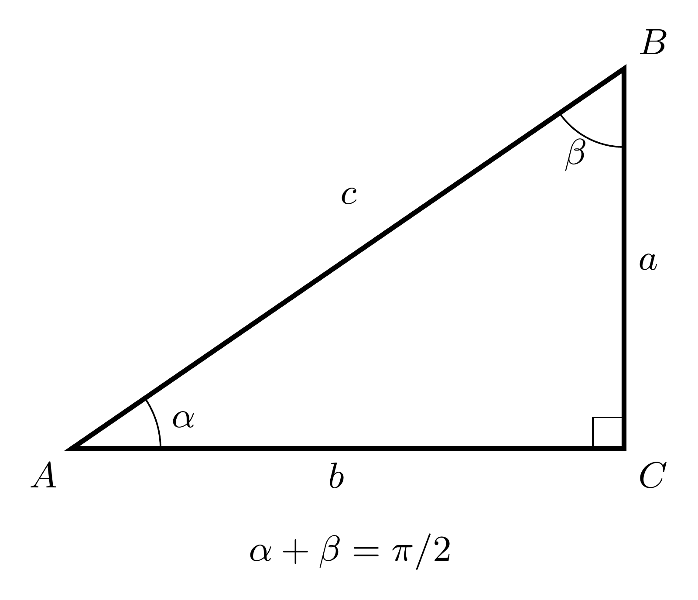
En un triángulo rectángulo, el cateto opuesto a \(\alpha\) es precisamente el adyacente a \(\beta\); por ello el seno de \(\alpha\) coincide con el coseno de \(\beta\). San Martín enfatiza que (4) y (5) fueron demostradas aquí para todos los ángulos reales mediante el círculo unitario.
Tercera consecuencia: imparidad del seno
En la cátedra (1:35:24–1:38:33). Se parte de la fórmula complementaria y se transforma
\[\operatorname{sen}(-\alpha) =\cos\left(\frac\pi2+\alpha\right) =\cos\left(\alpha-\left(-\frac\pi2\right)\right).\]
Al aplicar (3) con \(\beta=\alpha\) y el segundo ángulo \(-\pi/2\), se obtiene
\[ \begin{aligned} \operatorname{sen}(-\alpha) &=\cos\alpha\cos\left(-\frac\pi2\right) +\operatorname{sen}\alpha\operatorname{sen}\left(-\frac\pi2\right)\\ &=\cos\alpha\cdot0+\operatorname{sen}\alpha\cdot(-1) =-\operatorname{sen}\alpha. \end{aligned} \]
En consecuencia,
\[\boxed{\operatorname{sen}(-\alpha)=-\operatorname{sen}\alpha,\qquad\alpha\in\mathbb R.}\]
La función seno es impar: su gráfico posee simetría central respecto del origen.
Cuarta consecuencia: coseno de una suma
En la cátedra (1:38:34–1:40:05). Se escribe una suma como diferencia:
\[\beta+\alpha=\beta-(-\alpha).\]
Sustituyendo en (3) y aplicando la paridad del coseno y la imparidad del seno,
\[ \begin{aligned} \cos(\beta+\alpha) &=\cos\beta\cos(-\alpha)+\operatorname{sen}\beta\operatorname{sen}(-\alpha)\\ &=\cos\beta\cos\alpha-\operatorname{sen}\beta\operatorname{sen}\alpha. \end{aligned} \]
La fórmula del coseno de una suma es
\[\boxed{\cos(\beta+\alpha)=\cos\beta\cos\alpha- \operatorname{sen}\beta\operatorname{sen}\alpha.}\tag{6}\]
Obsérvese el contraste entre los signos de (3) y (6): la diferencia de ángulos produce una suma de productos; la suma produce una diferencia de productos.
Alcance de la grabación. En el cierre, San Martín anuncia que el seno de la suma y el seno de la diferencia serán desarrollados en la clase siguiente. Por ello esas fórmulas se conservan como contenido futuro. Las identidades (3)–(6) y las paridades sí corresponden a argumentos realizados en esta sesión.
Aplicación: calcular exactamente el coseno de 15 grados
En la cátedra (1:21:15–1:24:08). El profesor presenta el ejemplo de \(15^\circ\) como diferencia de \(45^\circ\) y \(30^\circ\), ángulos cuyo seno y coseno fueron calculados en la Cátedra 6.1.
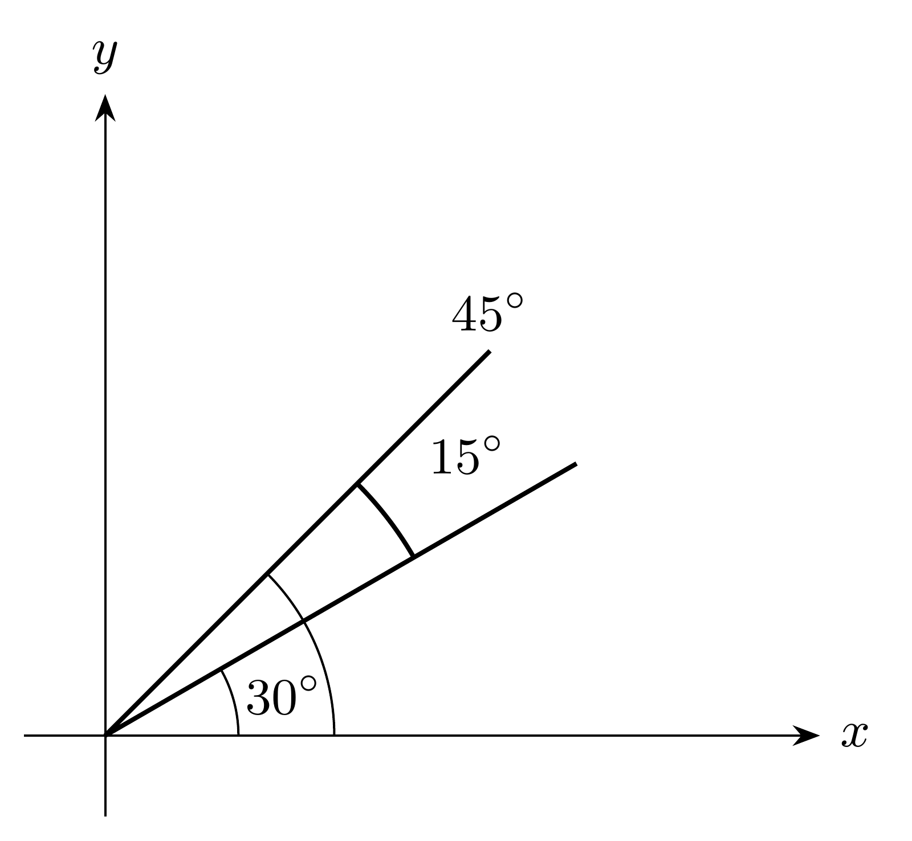
Desarrollo editorial del ejemplo indicado. En radianes, \(15^\circ=\pi/4-\pi/6=\pi/12\). Por (3),
\[ \begin{aligned} \cos\frac\pi{12} &=\cos\left(\frac\pi4-\frac\pi6\right)\\ &=\cos\frac\pi4\cos\frac\pi6+ \operatorname{sen}\frac\pi4\operatorname{sen}\frac\pi6\\ &=\frac{\sqrt2}{2}\frac{\sqrt3}{2}+ \frac{\sqrt2}{2}\frac12 =\boxed{\frac{\sqrt6+\sqrt2}{4}}. \end{aligned} \]
La posibilidad de calcular valores de nuevos ángulos a partir de ángulos elementales constituye una de las aplicaciones inmediatas de las identidades demostradas.
Próxima etapa del curso
El cierre de la clase, alrededor de 1:39:50, anuncia más identidades para la siguiente sesión: en particular, las fórmulas del seno de una suma y del seno de una diferencia. El profesor también insiste en la importancia de identificar con claridad cuándo las fórmulas se refieren a ángulos reales generales y cuándo a ángulos agudos de triángulos rectángulos.
La cadena pedagógica de esta clase es, por tanto: círculo unitario → semejanza de triángulos → proyecciones → aplicaciones mecánicas → distancias entre puntos → invariancia por rotación → identidades de diferencia, paridad, complementos y suma del coseno.
Taller de problemas y soluciones
Los ejercicios se presentan a continuación según la fuente de origen; las ampliaciones editoriales de cada apuntes permanecen expresamente identificadas.
Banco de ejercicios originales con soluciones — cátedra 6.1
Los siguientes problemas son ampliación editorial. Su objetivo es consolidar las técnicas de la cátedra mediante cálculos explícitos, verificaciones y extensiones cuidadosamente acotadas.
Ejercicio 1. Conversión sexagesimal
Expresar \(135^\circ\), \(225^\circ\) y \(-90^\circ\) en radianes.
Solución. Aplicamos \(\alpha_{\mathrm{rad}}=\alpha_{^\circ}\pi/180\): \(135\pi/180=3\pi/4\), \(225\pi/180=5\pi/4\) y \(-90\pi/180=-\pi/2\). Los tres números registran su sentido y amplitud angular.
Ejercicio 2. Sistema centesimal
Convertir \(50\,\mathrm{gon}\) y \(250\,\mathrm{gon}\) a grados y radianes.
Solución. Puesto que \(100\,\mathrm{gon}=90^\circ=\pi/2\), un grado centesimal mide \(\pi/200\) radianes. Así, \(50\,\mathrm{gon}=45^\circ=\pi/4\), y \(250\,\mathrm{gon}=225^\circ=5\pi/4\).
Ejercicio 3. Longitud del arco
Una circunferencia de radio \(5\) cm presenta un ángulo central de \(\pi/3\). Calcular el arco y comparar con uno de radio \(2\) cm.
Solución. Por \(s=r\alpha\), las longitudes son \(s_1=5\pi/3\) cm y \(s_2=2\pi/3\) cm. Sus cocientes por el radio coinciden: \(s_1/5=s_2/2=\pi/3\).
Ejercicio 4. Ángulos con una misma posición final
Encontrar una medida en \([0,2\pi)\) correspondiente a \(-7\pi/6\).
Solución. Sumamos una vuelta completa: \(-7\pi/6+2\pi=5\pi/6\), que pertenece a \([0,2\pi)\). Ambas medidas terminan en el mismo punto de la circunferencia.
Ejercicio 5. Medida grande y punto terminal
Determinar \(P_{9\pi/2}\).
Solución. Como \(9\pi/2=4\pi+\pi/2\), se acumulan dos vueltas completas y una cuarta parte de vuelta. Por periodicidad, \(P_{9\pi/2}=P_{\pi/2}=(0,1)\).
Ejercicio 6. Signos por cuadrantes
Hallar \(\operatorname{sen}(4\pi/3)\), \(\cos(4\pi/3)\) y \(\tan(4\pi/3)\).
Solución. El ángulo \(4\pi/3=\pi+\pi/3\) termina en el tercer cuadrante. Una media vuelta cambia el signo de ambas coordenadas, de modo que \(\operatorname{sen}(4\pi/3)=-\sqrt3/2\) y \(\cos(4\pi/3)=-1/2\). Su cociente es \(\tan(4\pi/3)=\sqrt3\).
Ejercicio 7. El ángulo de \(45^\circ\)
Demostrar que \(\tan(\pi/4)=1\) partiendo de la circunferencia.
Solución. El rayo de ángulo \(\pi/4\) pertenece a la bisectriz \(y=x\). De \(2x^2=1\) en el primer cuadrante se obtiene \(x=y=\sqrt2/2\). Por tanto, \(\tan(\pi/4)=y/x=1\).
Ejercicio 8. Un ángulo complementario
Calcular \(\tan(\pi/6)\) y racionalizar su denominador.
Solución. En el triángulo \(30^\circ\)–\(60^\circ\)–\(90^\circ\), \(\operatorname{sen}(\pi/6)=1/2\) y \(\cos(\pi/6)=\sqrt3/2\). La tangente vale \(1/\sqrt3=\sqrt3/3\).
Ejercicio 9. Identidad en un ángulo concreto
Verificar \(\operatorname{sen}^2(\pi/3)+\cos^2(\pi/3)=1\).
Solución. Sustituyendo \(\sqrt3/2\) y \(1/2\) se obtiene \((\sqrt3/2)^2+(1/2)^2=3/4+1/4=1\).
Ejercicio 10. Tangente y secante
Demostrar que \(1+\tan^2\alpha=\sec^2\alpha\) y enunciar la condición sobre \(\alpha\).
Solución. Para \(\cos\alpha\ne0\), dividimos \(\operatorname{sen}^2\alpha+\cos^2\alpha=1\) por \(\cos^2\alpha\). Se obtiene \(\tan^2\alpha+1=1/\cos^2\alpha=\sec^2\alpha\). El dominio es \(\mathbb R\setminus\{\pi/2+k\pi:k\in\mathbb Z\}\).
Ejercicio 11. Cotangente y cosecante
Probar \(1+\cot^2\alpha=\csc^2\alpha\).
Solución. Para \(\operatorname{sen}\alpha\ne0\), dividimos la identidad pitagórica por \(\operatorname{sen}^2\alpha\). El primer cociente es \(\cot^2\alpha\), el segundo vale \(1\), y el miembro derecho es \(\csc^2\alpha\).
Ejercicio 12. Dominio de la tangente
Expresar el dominio de \(\tan\) mediante un conjunto excluido y comprobar si \(3\pi/2\) pertenece al dominio.
Solución. \(\operatorname{Dom}\tan=\mathbb R\setminus\{\pi/2+k\pi:k\in\mathbb Z\}\). Al tomar \(k=1\) se obtiene \(3\pi/2\), ángulo donde \(\cos=0\); por ello queda excluido.
Ejercicio 13. Cotangente y recíproco
Comparar \(\cot(\pi/2)\) con \(1/\tan(\pi/2)\).
Solución. \(\cot(\pi/2)=\cos(\pi/2)/\operatorname{sen}(\pi/2)=0/1=0\). La expresión \(\tan(\pi/2)\) requiere dividir \(1\) por \(0\), así que \(1/\tan(\pi/2)\) tampoco está definida. Las dos expresiones representan leyes iguales en su dominio común, y funciones con dominios naturales distintos.
Ejercicio 14. Período fundamental de la tangente
Demostrar que \(\pi\) es un periodo de \(\tan\).
Solución. La media vuelta transforma \(P_\alpha\) en \(-P_\alpha\). Así \(\operatorname{sen}(\alpha+\pi)=-\operatorname{sen}\alpha\) y \(\cos(\alpha+\pi)=-\cos\alpha\). Para \(\cos\alpha\ne0\), el cociente queda inalterado, \(\tan(\alpha+\pi)=\tan\alpha\). El patrón de asíntotas y ceros demuestra además que \(\pi\) es su menor periodo positivo.
Ejercicio 15. Ceros del seno
Determinar todos los \(\alpha\in[-2\pi,2\pi]\) tales que \(\operatorname{sen}\alpha=0\).
Solución. Los ceros de seno son \(\alpha=k\pi\) con \(k\in\mathbb Z\). La condición \(-2\le k\le2\) deja \(\{-2\pi,-\pi,0,\pi,2\pi\}\).
Ejercicio 16. Ceros del coseno y de la secante
Determinar los ceros de \(\cos\) en \([0,2\pi]\). Analizar si \(\sec\) tiene ceros.
Solución. En una vuelta, \(\cos\) se anula para \(\pi/2\) y \(3\pi/2\). La secante es \(1/\cos\) en los puntos con coseno distinto de cero; el inverso multiplicativo de un real no nulo posee valor no nulo. Por tanto, el conjunto de ceros de \(\sec\) es vacío.
Ejercicio 17. Interpretación de la tangente como segmento
Para \(\alpha=\pi/6\), hallar el punto donde el rayo angular corta la recta \(x=1\) y calcular su distancia al origen.
Solución. La pendiente del rayo es \(\tan(\pi/6)=1/\sqrt3\), por lo que la recta es \(y=x/\sqrt3\). En \(x=1\) se obtiene \(Q=(1,1/\sqrt3)\). Entonces \(|OQ|=\sqrt{1+1/3}=2/\sqrt3=|\sec(\pi/6)|\).
Ejercicio 18. Una imagen acotada y un dominio acotado
Estudiar la imagen de \(\tan\) restringida al intervalo \((-\pi/2,\pi/2)\) y compararla con la imagen de \(\operatorname{sen}\) en \(\mathbb R\).
Solución. En el intervalo central, la tangente es continua y estrictamente creciente; su ordenada geométrica toma valores negativos y positivos arbitrariamente grandes al acercarse a las rectas verticales extremas. Por ello su imagen es \(\mathbb R\), aunque el dominio indicado sea acotado. En contraste, la ordenada de la circunferencia unitaria siempre pertenece a \([-1,1]\), que es la imagen del seno en \(\mathbb R\).
Problemas complementarios resueltos — cátedra 6.2
Ampliación editorial. Los ejercicios E1–E18 han sido elaborados para estudiar los conceptos de esta clase. Las resoluciones son originales; se apoyan en las herramientas y fórmulas presentadas en la grabación.
E1. Signo en un ángulo del segundo cuadrante
Problema. Determinar los signos de \(\operatorname{sen}(5\pi/6)\), \(\cos(5\pi/6)\) y \(\tan(5\pi/6)\).
Solución. Como \(\pi/2<5\pi/6<\pi\), el punto pertenece al cuadrante II. Su ordenada es positiva y su abscisa negativa. Así, \(\operatorname{sen}(5\pi/6)>0\) y \(\cos(5\pi/6)<0\); la razón de ambas tiene signo negativo: \(\tan(5\pi/6)<0\).
E2. Un triángulo rectángulo de lados 3, 4 y 5
Problema. En un triángulo rectángulo, el cateto opuesto a \(\alpha\) mide \(3\), el adyacente mide \(4\) y la hipotenusa mide \(5\). Calcular las tres razones.
Solución. Aplicando las expresiones demostradas por semejanza,
\[\operatorname{sen}\alpha=\frac35,\qquad\cos\alpha=\frac45,\qquad\tan\alpha=\frac34.\]
La identidad fundamental se verifica: \(9/25+16/25=1\).
E3. Proyección de un segmento
Problema. Un segmento de longitud \(6\) forma \(\pi/4\) con el eje horizontal. Hallar sus componentes.
Solución. Como \(\cos(\pi/4)=\operatorname{sen}(\pi/4)=\sqrt2/2\),
\[L_x=6\frac{\sqrt2}{2}=3\sqrt2,\qquad L_y=3\sqrt2.\]
Las dos proyecciones poseen la misma longitud por la simetría del ángulo de \(45^\circ\).
E4. Recuperar la longitud mediante Pitágoras
Problema. Demostrar a partir de las componentes \(L_x=L\cos\alpha\), \(L_y=L\operatorname{sen}\alpha\) que \(L_x^2+L_y^2=L^2\).
Solución. Se calcula
\[L_x^2+L_y^2=L^2(\cos^2\alpha+\operatorname{sen}^2\alpha)=L^2.\]
La igualdad expresa que la descomposición ortogonal conserva el módulo del segmento.
E5. Pendiente y ángulo de inclinación
Problema. La recta pasa por \((1,2)\) y \((5,6)\). Determinar su pendiente y un ángulo de inclinación.
Solución. Por definición, \(m=(6-2)/(5-1)=1\). Entonces \(\tan\alpha=1\) y se puede elegir \(\alpha=\pi/4\). Esta es la inclinación aguda respecto de la horizontal.
E6. Pendiente negativa y ángulo orientado
Problema. Hallar la pendiente de la recta que pasa por \((-2,3)\) y \((2,-1)\) y describir una dirección angular.
Solución. \(m=(-1-3)/(2-(-2))=-4/4=-1\). Un ángulo orientado representativo es \(\alpha=-\pi/4\), porque \(\tan(-\pi/4)=-1\). La recta geométrica admite también ángulos congruentes módulo \(\pi\).
E7. Peso y normal de un cuerpo
Problema. Un bloque de \(5\,\mathrm{kg}\) está en un plano con \(\alpha=\pi/6\); tomar \(g=9.8\,\mathrm{m/s^2}\). Calcular la magnitud del peso paralelo y perpendicular al plano.
Solución. El peso total es \(mg=49\,\mathrm N\). Por \(\operatorname{sen}(\pi/6)=1/2\) y \(\cos(\pi/6)=\sqrt3/2\),
\[P_\parallel=\frac{49}{2}\,\mathrm N=24.5\,\mathrm N, \quad P_\perp=\frac{49\sqrt3}{2}\,\mathrm N.\]
Si el plano ejerce una reacción normal de equilibrio y no actúan otras fuerzas perpendiculares, \(N=P_\perp\).
E8. Resorte que mantiene el equilibrio
Problema. El bloque de E7 está sujeto a un resorte paralelo al plano de constante \(k=100\,\mathrm{N/m}\), sin roce. Hallar el estiramiento de equilibrio.
Solución. La tensión requerida es \(T=P_\parallel=24.5\,\mathrm N\). Por la ley \(T=k\Delta\ell\),
\[\Delta\ell=\frac{24.5}{100}=0.245\,\mathrm m.\]
E9. Condición de roce estático
Problema. Un cuerpo reposa sobre un plano inclinado con \(\mu_s=1/\sqrt3\). Determinar el ángulo máximo de equilibrio en el modelo de la clase.
Solución. Se requiere \(\tan\alpha\le1/\sqrt3\). En \((0,\pi/2)\) la tangente es creciente y \(\tan(\pi/6)=1/\sqrt3\). Por tanto el umbral es \(\boxed{\alpha_c=\pi/6=30^\circ}\).
E10. Comprobación geométrica de la fórmula de cuerda
Problema. Calcular la distancia entre \(P_0\) y \(P_{\pi/2}\).
Solución. Los puntos son \((1,0)\) y \((0,1)\), y la distancia directa es \(\sqrt{(1-0)^2+(0-1)^2}=\sqrt2\). La fórmula rotada entrega
\[d^2=2-2\cos(\pi/2)=2\quad\Longrightarrow\quad d=\sqrt2.\]
E11. Dos puntos diametralmente opuestos
Problema. Calcular \(|P_{\pi/3}P_{4\pi/3}|\).
Solución. La diferencia angular es \(\pi\). Entonces \(d^2=2-2\cos\pi=4\); al ser una distancia positiva, \(d=2\), el diámetro del círculo unitario.
E12. Coseno de una diferencia de 60 grados
Problema. Calcular \(\cos(\pi/3-\pi/6)\) usando la identidad (3).
Solución.
\[\cos\left(\frac\pi3-\frac\pi6\right) =\frac12\frac{\sqrt3}{2}+ \frac{\sqrt3}{2}\frac12=\frac{\sqrt3}{2}.\]
El argumento del coseno es \(\pi/6\), de modo que el resultado concuerda con la tabla de ángulos elementales.
E13. Exactitud del coseno de quince grados
Problema. Determinar \(\cos(15^\circ)\).
Solución. Utilizando \(15^\circ=45^\circ-30^\circ\),
\[\cos(15^\circ) =\frac{\sqrt2}{2}\frac{\sqrt3}{2}+ \frac{\sqrt2}{2}\frac12 =\boxed{\frac{\sqrt6+\sqrt2}{4}}.\]
E14. El coseno de un suplemento
Problema. Demostrar \(\cos(\pi-\alpha)=-\cos\alpha\).
Solución. Por (3),
\[\cos(\pi-\alpha)=\cos\pi\cos\alpha+ \operatorname{sen}\pi\operatorname{sen}\alpha =(-1)\cos\alpha+0=-\cos\alpha.\]
E15. La paridad del coseno en un valor concreto
Problema. Justificar \(\cos(-\pi/3)=\cos(\pi/3)\) y determinar su valor.
Solución. La función coseno es par, según la deducción de la sección 8.1. Como \(\cos(\pi/3)=1/2\), el valor solicitado es \(1/2\).
E16. El seno de un ángulo complementario
Problema. Calcular \(\operatorname{sen}(\pi/3)\) a partir de \(\cos(\pi/6)\).
Solución. Como \(\pi/2-\pi/3=\pi/6\), por (4)
\[\operatorname{sen}\frac\pi3 =\cos\left(\frac\pi2-\frac\pi3\right) =\cos\frac\pi6=\frac{\sqrt3}{2}.\]
E17. Coseno de una suma
Problema. Calcular \(\cos(2\pi/3)\) como coseno de \(\pi/3+\pi/3\).
Solución. Por (6),
\[\cos\frac{2\pi}{3} =\cos^2\frac\pi3-\operatorname{sen}^2\frac\pi3 =\frac14-\frac34=-\frac12.\]
E18. Una identidad de ángulo doble
Problema. Deducir una fórmula para \(\cos(2\alpha)\) utilizando el coseno de una suma.
Solución (ampliación editorial). Tomamos \(\beta=\alpha\) en (6):
\[\boxed{\cos(2\alpha)=\cos^2\alpha-\operatorname{sen}^2\alpha.}\]
De \(\cos^2\alpha+\operatorname{sen}^2\alpha=1\) se obtienen también las formas \(\cos(2\alpha)=2\cos^2\alpha-1\) y \(\cos(2\alpha)=1-2\operatorname{sen}^2\alpha\). Estas identidades se siguen de lo demostrado en la clase, aunque su desarrollo sistemático pertenece al estudio posterior.
Este capítulo pertenece a la edición temática no oficial del curso IC2021. Índice del libro · Fuentes y concordancia.